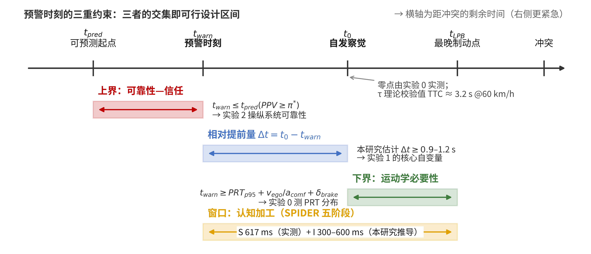
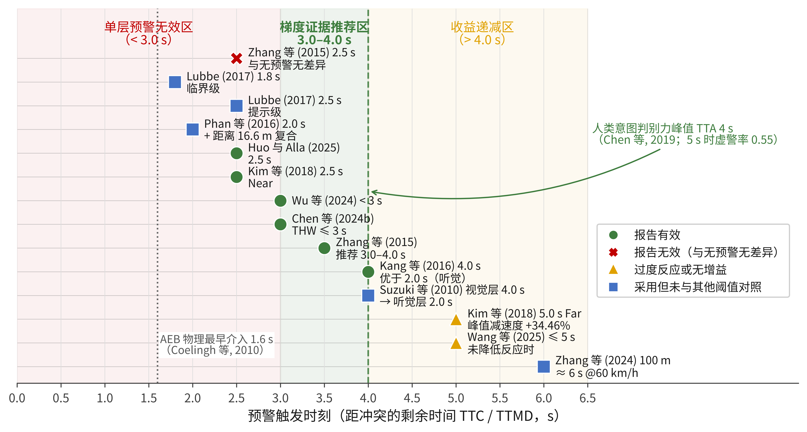
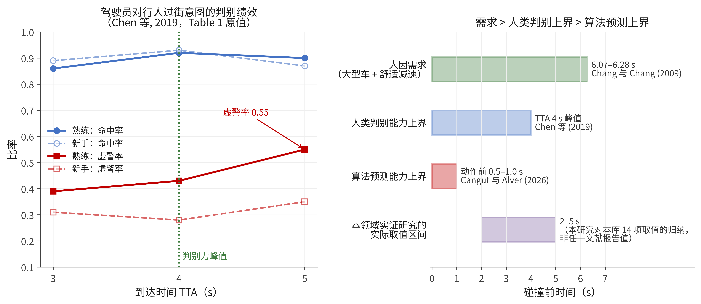
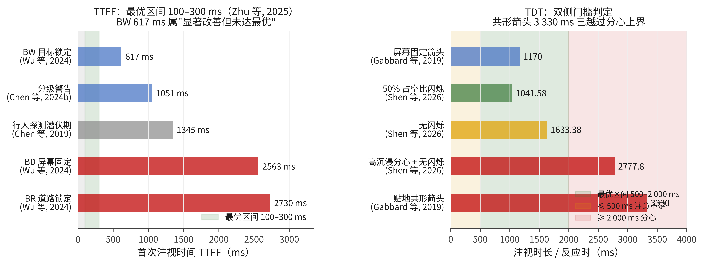
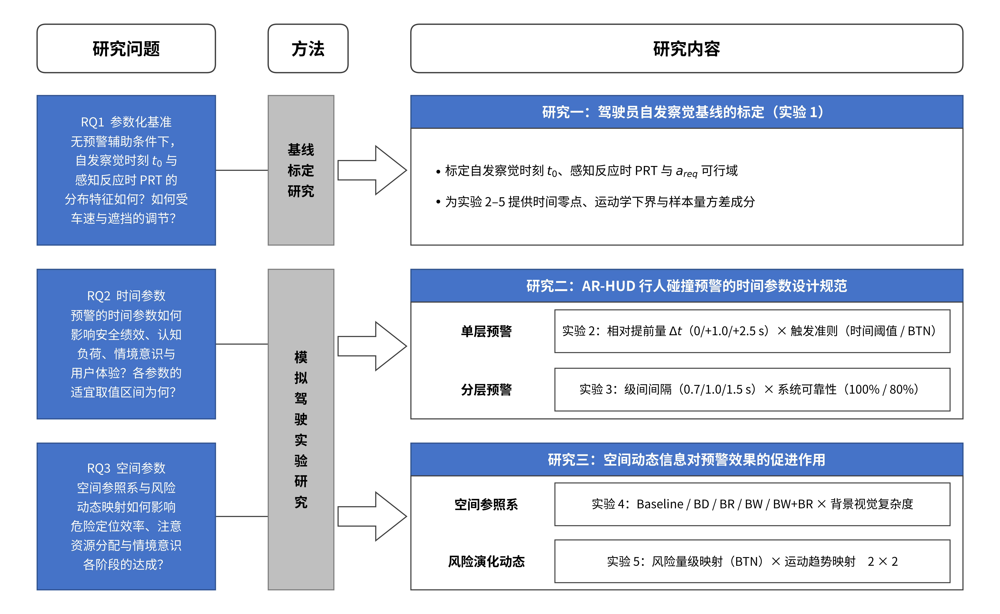

难处：文献里出现过 1.8／2.0／2.5／3.0／4.0／5.0／6.0 s，没有任何一篇说明自己为什么取这个值。逐个试是无穷的。
本章的回答：都不取。改为先确定参数被什么约束住——建立三重约束模型（上界、下界、认知窗口 + 零点 t0），把「最优 TTC 是多少」换成「可行区间在哪里」。
→ §2.1 概念 · 六项时间指标 · 六项空间要素 · 五项理论 · 三重约束模型 · 行人侧参数
难处：同一个 5.0 s，Kang 等（2016）报告显著改善避险绩效、Kim 等（2018）报告峰值减速度上升 34.46%、Wang 等（2025）报告相对基线无显著增益。取平均或各引一句都是错的。
本章的回答：把每一组矛盾拆到条件差异／记法口径／推论过度三类来源上，逐组找出那个未被控制的第三变量——共七组主要 + 四组次级冲突。
→ §2.2 时间侧证据｜§2.3 空间侧证据｜§2.4 冲突辨析与方法学评述
难处：综述若只汇总已有结论，就无法说明「为什么还要做实验」。必须指出零对照的参数。
本章的回答：九项研究空白（其中 4 项为「零人因对照」）→ 收敛为三个层层递进的核心问题 → H1–H4（由理论导出、可否证）+ H5–H14（由文献归纳）。
→ §2.5 空白与问题提出｜§2.6 本章小结（七处对既有共识的修正）
| 代际 | 显示方式 | 信息与场景的关系 | 典型内容 |
|---|---|---|---|
| 传统 HUD | 屏幕固定 screen-fixed | 图形位置与车外场景无空间对应，仅占据视野中一块固定区域 | 车速、导航箭头、油量 |
| AR-HUD | 世界锁定 world-locked／共形 contact-analog | 图形位置与车外目标逐帧配准 | 行人边界框、路面虚拟阴影、车道增强、冲突区标记 |
| 指标 | 定义 | 关键性质与局限 |
|---|---|---|
| TTC | 双方不改变运动状态时距碰撞的剩余时间 | 最常用；但行人横穿是二维相交冲突，「碰撞点」本身依赖双方速度，定义不唯一 |
| TTMD | 两者间距达到最小值的时刻距当前的时间 | 本研究固定采用；在轨迹不相交（擦肩而过）时仍有定义，且避免与「最大减速度所需时间」同名缩写混淆 |
| THW | d/vego | 只依赖自车速度，对逼近速率不敏感；Chen 等（2024b）以 THW ≤ 3 s 为高亮阈值 |
| areq / BTN | areq=v2/(2d)；BTN=areq/amax | 把车速内生化；BTN = 1 意味着碰撞物理上已不可避免。同族指标为 Takada 等（2014）的 DCA |
| τ 与光学膨胀率 | 光学膨胀率；τ = θ / (dθ/dt) | Lee（1976）；觉察阈值约 0.003 rad/s；由 dth = √(wv / (dθ/dt)th) 得 60 km/h 下 TTC ≈ 3.2 s |
| t0 / Δt | 无辅助时的自发察觉时刻；Δt=t0-twarn | 本研究的核心主张：决定预警有无信息增益的不是绝对 TTC，而是 Δt |
| warning lag | 触发条件满足 → 图形上屏 | 实车可达 1.47 s（Thammakaroon 与 Tangamchit, 2012）；本库几乎无人报告 |
| 层面 | 用法 | 在设计中的性质 | 出处与依据 |
|---|---|---|---|
| ① 算法侧 触发量 | 预警触发条件写作 BTN ≥ θ，替代 TTC ≤ θ；实验 2 中作为触发准则类型这一自变量的一个水平 | 自变量的水平 （准则类型，二分类：固定时间阈值／减速度归一化） | Takada 等（2014）的避险减速度 DCA；Chen 等（2013）；Coelingh 等（2010）；量产自动紧急制动普遍采用同族量 |
| ② 材料侧 难度标度 | 事后计算每个试次在预警时刻的 BTN，核验各条件的运动学难度是否等价，并作跨车速比较的共同刻度 | 操纵检查量与协变量 （非自变量） | 表 2-3 的换算；本研究方法学要求 |
| ③ 空间侧 映射量 | 实验 5 的风险量级空间映射以 BTN 为映射源，即图形几何随 BTN 缩放 | 自变量的映射源 （连续量 → 视觉量的转换基准） | Suzuki 等（2010）的 Rx = Ttc·Vcar 属同源做法（§2.3.7） |
| 阶段 | 本研究的代理指标 | SA 层级 （原文明确） |
|---|---|---|
| Scanning | TTFF（警告／行人）、道路注视比例、注视分散度 | 层级 1 感知 |
| Predicting | 预期性注视比例、风险区首次注视时刻（原文确认代理量即 anticipatory glances） | 层级 3 预测 |
| Identification | 目标验证时间 = TTFF(行人) − TTFF(警告)、漏检率／无意视盲率 | 层级 2 理解 |
| Decision | 首次注视行人 → 松油时间、间隙判断、安全边际 | SA 的 下游 |
| Exec. Resp. | 制动启动时间、峰值减速度、jerk、反应时分布尾部 | SA 的 下游 |
| SA 层级 | SPIDER 阶段 | 本研究的操作化指标 | 相关自变量 |
|---|---|---|---|
| 层级 1 感知 perception：觉察到相关要素 | Scanning | 自发察觉时刻 t0（无预警条件下首次注视行人的时刻）；有预警条件下的首次注视时间 TTFF；危险漏检率 | 相对提前量 Δt、空间参照系、图形显著性 |
| 层级 2 理解 comprehension：理解要素对当前目标的意义 | Identifying | 目标验证时间（= TTFF行人 − TTFF警告）、风险等级判断正确率、紧迫度判断 | 分层语义、图形形态与颜色编码、信息完整度 |
| 层级 3 预测 projection：预测要素的未来状态 | Predicting | 路径侵入预测正确率、冲突点空间误差、过街方向判断、预期性注视比例 | 运动趋势空间映射、风险量级空间映射 |
| （SA 之外的执行侧） | Deciding Executing | 松油时刻、制动启动时间、峰值减速度、jerk | 全部时间参数 |

| 约束 | 约束的实质 | 数学表述 | 由谁测定 |
|---|---|---|---|
| ① 运动学下界 | 预警必须足够早：来不及刹住就没有意义 | twarn≥ PRTp95+vego/acomf+δbrake | 实验 1 测 PRT 分布与 acomf，由车速算出 |
| ② 可靠性上界 | 预警不能太早：算法判不准，虚警毁掉信任 | twarn≤ tpred(PPV≥π*) | 实验 3 操纵系统可靠性直接检验 |
| ③ 认知窗口 | 窗口宽度必须容得下注意加工 | Δt = t0 − twarn ≥ 加工所需（本研究估计 0.9–1.2 s） | 实验 2 以 Δt 为自变量直接检验 |
| 零点 t0 | 零点缺失时相对提前量在操作上无从定义 | 驾驶员在无辅助条件下的自发察觉时刻 | 实验 1 实测；τ 理论给出校验值 TTC ≈ 3.2 s |
| 来源 | 速度 | 用途 |
|---|---|---|
| 斑马线实测均值（Crompton, 1979） | 1.49 | 主设定 |
| 土耳其标准设计速度 | 1.4 | 主设定 |
| 墨尔本实测（Bennett 等） | 1.53 | — |
| MUTCD 群体平均基准 | 1.22 | 边界校验 |
| 无按钮配时推荐值 | 0.91–0.99 | 最慢档 |
| < 16 岁 / > 64 岁 | 1.53 / 1.16 | 代际边界 |
| 判据 | 数值 | 一手出处（两篇综述均为转引） |
|---|---|---|
| 无人接受的间隙 | < 1.5 s | 英国实测「所有行人接受 10.5 s、无人接受 < 1.5 s」——Ezzati Amini 等（2019）转引，原文献编号 [116] |
| 通常不过街的 TTC | < 3 s | DiPietro 与 King（1970）——Rasouli 与 Tsotsos（2020）转引 |
| 非常可能过街的 TTC | > 7 s | Schmidt 与 Färber（2009）——同上转引；Ezzati Amini 等经 Schroeder 独立得到同一区间 |
| 起步损失时间 | 1.3 s | 路段中部受控过街，Bennett 等——Ezzati Amini 等（2019）转引 |
| 研究 | 阈值 | 场景与车速 | 关键结果 |
|---|---|---|---|
| Kim 等（2018） | 2.5 / 5.0 s | 户外停车场实车 15 mph（24 km/h） | 体积式 HUD（8 m 至光学无穷远，17° 圆形视场）；5.0 s 条件下 BRAKE 文本使峰值减速度较无预警基线上升 34.46%；虚拟阴影未出现过度反应 |
| Lubbe（2017） | 1.8 s 临界 2.5 s 提示 | 运动基座模拟器 7.1 m 穹顶 + 6 DOF | Setting 4（视听 + 制动脉冲）仅 1 次碰撞（其余 8–10 次），平均反应时 0.8 s（SD 0.29）；无触觉条件最长反应时 2.5 s，已超过 TTC 本身 |
| Huo 与 Alla（2025） | 2.5 s （50 km/h → 34.72 m） | 城市道路模拟 白天／夜间 | 危险感知时间：白天 0.52 vs 1.20 s；夜间 0.58 vs 1.89 s（均 p < .01）；AR 可消除昼夜差异 |
| Phan 等（2016） | min(TTC 2 s, d 16.6 m) | 固定基座模拟器 | 行人觉察时刻由 TTC 约 3 s 提前至 4.5 s；紧急制动次数由 72 降至 11 |
| Wu 等（2024） | < 3 s | 360° 全景视频 60 km/h，行人 1.5 m/s | 动态跟随 BW 在所有转向场景的 TTFF、注视次数、注视时长均显著优于 BD／BR |
| Chen 等（2024b） | THW ≤ 3 s | 多目标场景，新手 | 分级警告 vs 均等警告：1 083 ms vs 1 707 ms（−36%） |
| Wang 等（2025）ARive | ≤ 5 s | HoloLens 2，让行场景 | 未显著降低反应时（疑似习惯化），但显著增大 THW；红地毯让行成功率优于基线（p < .001） |
| Zhang 等（2024） | 100 m ≈ 6 s @60 km/h | 网联 V2X，中国样本 N = 34 | 首次制动位置 64.50 → 27.33 m（提前约 37 m）；最大减速度 −8.30 → −5.03 m/s²；最小冲突距离 10.75 → 20.96 m |
交叉口闯红灯冲突，听觉预警，2.5 / 3.0 / 3.5 / 4.0 / 4.5 / 5.0 / 5.5 s + 无预警
| 结果项 | 数值 |
|---|---|
| 无效阈值 | 2.5 s：全部时间切片上与无预警无显著差异，碰撞率 29.4% |
| 有效性硬下限 | 3.0 s |
| 推荐区间 | 3.0–4.0 s |
| 无预警基线 | 直到距冲突点 1.5 s 才猛制动；碰撞率 44.1% |
| 最大减速距离 | 33.24 → 36.57 / 44.44 / 36.92 / 50.07 / 50.52 / 56.26 / 59.49 m（F = 7.464, p < .05） |
| 行为离散度 | SD 40.75 → 15.97 m |
| 响应潜伏期 | 0.5 s（3.0 s 条件）→ 2.0 s（5.5 s 条件） |
TTC 2.0 / 3.0 / 4.0 / 5.0 s（W1–W4），40 km/h。紧迫度主效应极强（松油门：F = 5 037.10）；模态主效应仅部分显著（首次注视行人 p = .608 不显著）。
本研究由其数据推算的阶段耗时：警报 → 松油门 0.53–0.77 s；松油门 → 踩刹车 0.35 s（W1）→ 1.38 s（W4）。

| 车速 | TTC 2 s | TTC 4 s |
|---|---|---|
| 40 km/h | 2.78 m/s² BTN 0.35 | 1.39 m/s² BTN 0.17 |
| 60 km/h | 4.17 m/s² BTN 0.52 | 2.08 m/s² BTN 0.26 |
| 80 km/h | 5.56 m/s² BTN 0.69 | 2.78 m/s² BTN 0.35 |
| 来源 | 准则与关键参数 |
|---|---|
| Takada 等（2014） | DCA；PDCA（预测型，视觉）先于 ODCA（当前型，听觉）；触发 4.0 / 解除 2.0 m/s²（2 : 1 滞环，原文目的「避免极短促的报警」）；反应时 T = 1.2 s（未踩刹车，为 90 百分位）／0.2 s（已踩刹车） |
| Chen 等（2013） | TTC 与车头时距双条件；临界 Tc = 1.5 s；反射 0.44–0.52 + 判断 0.15–0.25 + 动作 0.15–0.40 = 0.74–1.17 s；制动压力建立 0.3–0.75 s；总时延 1.04–1.92 s |
| Coelingh 等（2010） | 量产实现；AEB 介入「未响应且碰撞约在 1 s 之后」；物理最早 1.6 s；纯延迟 180 ms + 斜坡 20 m/s³，建立 10 m/s² 需 0.68 s；相机 48° + 雷达 60° |
| Char（2020） | 3 700+ 例事故重建 + 200 人反应时分布；行人 FOV > 30° 时 TTC 2 s 检出 > 90%，≥ 40° 后增益极小 |
| 来源 | 频率 | 占空比 | 效果 |
|---|---|---|---|
| Lind（2007） | 4 Hz | 60% | CWHUD 快约 200 ms |
| Shen 等（2026） | 0.5 Hz （周期 2 s） | 0/25/50/75% | 50% 最优 1 041.58 ± 380.87 ms；无闪烁最差 1 633.38 ± 1 282.46 ms；高沉浸分心下 2 777.80 → 1 389.34 ms |
| Hou 等（2024） | 未报告 | 未报告 | 动效对无意视盲无显著影响，仅闪烁缩短反应时（仅摘要） |
| 来源 | 级联结构 | 级间间隔 |
|---|---|---|
| Lubbe（2017） | HUD + 57 dBA（2.5 s）→ 视听 + 64 dBA + 制动脉冲（1.8 s） | 0.7 s |
| Large 等（2019） 转引 Daimler | early 4.0 → warning 2.6 → urgent 1.6 → 自动制动 1.1 s | 1.4 / 1.0 / 0.5 s （单调缩短） |
| Suzuki 等（2010） | 视觉情境层 4.0 s → 听觉叠加 2.0 s；危险等级每 1.0 s 一档 | 2.0 s；档距 1.0 s |
| Phan（2016） | 检测到即显示贴合框 → TTC 2.0 s 叠加黄色面板 | 非固定秒数 |
Zhang 等（2015）：TTC 2.5 s 单层预警与无预警无显著差异（29.4% vs 44.1%），有效下限 3.0 s。
反面推论：若 L2 设在 2.0 s，它单独不可能有效——L2 之所以能设在 2.0 s，前提是 L1 已完成定位工作。
Phan（2016）的覆盖人群百分位表为 L2 锚点提供量化依据：TTC 1.0 s → 45%、1.6 s → 80%、2.0 s → 90%。

| 来源 | 分解 |
|---|---|
| Chen 等（2013） | 反射 0.44–0.52 + 判断 0.15–0.25 + 动作 0.15–0.40 = 驾驶员 0.74–1.17 s；+ 制动压力建立 0.3–0.75 s = 总时延 1.04–1.92 s |
| Large 等（2019） （本研究推算） | 警报 → 松油门 0.53–0.77 s；松油门 → 踩刹车 0.35 → 1.38 s（随提前量增大而变长） |
| Winkler 等（2018） | 制动反应时 1.4 s（无预警）→ 1.03–1.05 s；学习效应 T1 → T2：1.20 → 1.04 s；清洗界 0.2–2.9 s（剔除约 16%，纳入 77%） |
| 变量 | 已知效应 | 处理 |
|---|---|---|
| 年龄 | 老年 PRT 更长；临界场景偏好停车标志（Kazazi 等, 2015：BRT 1.9 → 1.2 s） | 不操纵 声明边界 |
| 驾驶经验 | 低负荷下新手显著依赖 AR，AR 故障时严重退化（Huo 与 Alla, 2025） | 作为协变量 |
| 分心／次任务负荷 | 显著推后时机下限；放大动效收益（Shen 等：2 777.80 → 1 389.34 ms） | 实验 4 区块 F |
| 能见度 | AR 相对收益放大（Zhang 等 2024 雾天再提前 27.8 m） | 固定晴天日间 |
| 车速 | 同一秒数对应不同运动学难度 | 检验因素 40 / 60 km/h |
| 遮挡 | 直接改变 t0 | 实验 1 自变量 |
| 背景复杂度 | 调节锁定策略的价值 | 实验 4 主设计 |
| 是什么的界 | 取值 | 依据与用途 |
|---|---|---|
| ① 反应时本身 | 驾驶员 0.74–1.17 s；含车辆侧 1.04–1.92 s | Chen 等（2013）三段分解。是实测分布，非设计界限 |
| ② 反应时数据清洗 | 下 0.2 s／上 2.9 s（g = 3.0） | Winkler 等（2018）规则，本研究沿用并预注册 |
| ③ 预警提前量（三重约束） | 下界 4.3–6.97 s @60 km/h；上界 = tpred | 下界＝运动学式；上界＝虚警率 0.55@5 s（Chen 等, 2019）+ 信任证据。只有这一条是设计界限 |
| 显示位置 | 制动反应时 | 漏报次数 |
|---|---|---|
| 碰撞预警平视显示 CWHUD | 最快 （快约 200 ms） | 1 |
| 方向盘显示 | — | 6 |
| 仪表显示 | — | 12 |
| 高位下视显示 HHDD | — | 17 |
F(3,45) = 10.8, p < .0001, 效应量 0.87
中国样本的印证（Zhang 等, 2024）：HUD 相较高位下视显示使油门松开提前约 20+ m、首次制动提前约 25 m、最大减速度降低约 2 m/s²、最小冲突距离增加约 6 m。
| 策略 | TTFF |
|---|---|
| BW 目标锁定 | 617 ms |
| BD 屏幕固定 | 2 563 ms |
| BR 道路锁定 | 2 730 ms |
RGB(255,0,0)；TTC < 3 s；60 km/h；行人 1.5 m/s。差异接近 4 倍。
| 来源 | 方向与内容 |
|---|---|
| Wang 等（2024） DSID | 支撑 基于 SRK 分类学把知识级／规则级信息转换为技能级信号；四个界面中同时含侧向预警 + 动态驾驶空间 + 速度表者最好；同时提升情境意识与避险能力、降低认知负荷 |
| Wei 等（2025） | 部分反证 自动驾驶无保护交叉口；不同信息组合间信任无显著差异；「周边车轨迹 + 盲区视频」负荷最低（仅摘要） |
| Chen 等（2024b） | 反证 多目标同色 Equivalent 模式在新手中可能比无警告更差 |
Zhong 等（2022）：实车 AR-HUD（FOV 12° × 5°），7 色 × 3 描边 × 2 照度 = 42 组合，N = 25（均龄 28.4，驾龄 ≥ 2 年）
| 照度 | 可见性排序（评分） |
|---|---|
| 日间 100 000 lx | 黄 4.12 > 绿 3.92 > 红 3.08 > 橙 2.84 > 蓝＝紫 1.16 |
| 夜间 30 lx | 红 3.88 > 黄 3.80 > 绿 3.56 > 橙 2.84 > 蓝 1.68 > 紫 1.40 |
分级配色的最强收益（Ma 等, 2024 三色地毯 + 饱和度渐变）：风险感知时间缩短 62.96%（p < .001）、风险决策时间缩短 34.57%（p = .003），同时降低 DALI 负荷与瞳孔变化。
| 来源 | 原文值 | 换算不透明度 |
|---|---|---|
| Ye 与 Yin（2025） | 0.75 | 0.75 |
| Hou 等（2024） | T1/T0.75 T0.5/T0.35 | 最优 0.5–0.75 |
| Li 等（2025a） | 0.1–1.0 十档 | ≥ 0.6 |
| Lopez 与 Moacdieh（2025） | 20% 与 60% | 0.6 一致 0.2 见下 |
| 类别 | 数值 |
|---|---|
| 显示 FOV （能画多宽） | 量产 10°–15°；文献方案 85°/65°/40°（Ma 等 2021、Teng 等 2023）；实测 12°×5°（Zhong 等 2022） |
| 传感 FOV （能看多宽） | 行人 > 30° 时 TTC 2 s 检出 > 90%，≥ 40° 后增益极小，骑行者需 60°+（Char, 2020）；量产相机 48° + 雷达 60°（Coelingh 等, 2010） |
| 来源 | 规则 |
|---|---|
| Suzuki 等（2010） | 纵向深度随车速伸缩： Rx = Ttc· Vcar Ttc,max = 4.0 s；20 → 22.2 m、40 → 44.4 m、50 km/h → 55.6 m；斑马线区两侧各外扩 1 m |
| Kuo 等（2016） | 危险区以 1.5 m 线划分左右子区；位置误差 0.12–0.15 m |
| Zhang 等（2023） | 按行人心理安全距离划分车辆坐标区（仅摘要，无数值） |
| 来源 | 关键发现 | 证据强度 |
|---|---|---|
| Wang 等（2021） | AR-HUD 辅助驾驶中的无意视盲；本库该方向被引最多的实证锚点之一（约 56 次引用） | 全文 |
| Chen 等（2023） | AR 环境下对未增强危险的无意视盲；本库唯一操纵「AR 图形与未增强危险的相对位置」的研究——是本研究动态 AOI 方案的必要输入 | 全文 |
| Hou 等（2024） | 动效对无意视盲无显著影响，仅闪烁缩短反应时（透明度 T1/T0.75/T0.5/T0.35） | 仅摘要 |
| Ye 与 Yin（2025） | 水平／垂直／混合空间面定位与无意视盲；垂直面在工作负荷与实用性上最佳 | 全文 |
| Pammer 与 Blink（2013） | 乡村与城市场景驾驶判断的注意差异；无意视盲中的语义一致性机制 | 全文 |
| Gabbard 等（2019） | 贴地共形箭头使心理需求由 11.7% 升至 23.7%，HUD 图形注视时长最长达 3.33 s（屏幕箭头 1.17 s）——已越过分心上界 | 全文 |
| Kim 与 Gabbard（2019） | 提出 AR-HUD 分心潜势评估方法：中央检测任务 CDT + 周边检测任务 PDT 双指标框架 | 全文 |
| Huo 与 Alla（2025） | 新手在 AR 系统随机故障时严重反应退化——「AR 依赖性」问题：AR 的收益以系统可靠性为前提 | 全文 |

结论相反，但实验条件（模态、车速、场景、样本）系统不同。
处理：把差异条件升级为自变量，冲突转化为交互效应假设。
本领域冲突的主体。共同根源是未控制的第三变量，出现频率最高的两个是「未测量自发察觉时刻」与「未区分信息的互补／冗余关系」。
数值相差数倍，但可能只是单位、方向、测量对象不同。
处理：取得全文统一口径；未统一前不得混合引用，把不确定性转化为敏感性检验。
危害被严重低估。不透明度的 3 倍冲突与闪烁频率的 8 倍冲突都不是科学分歧，而是报告规范缺失的后果。
一方的结论超出其数据支持范围（如由零结果推论显著提升）。
处理：回到原始数据，降级引用。
本章已执行三处降级：① Wei 等（2025）的信任零结果；② Wang 等（2026）删除的 25.16% 基线；③ 未能溯源的「Bliss 30% 门限」。
Kang 等（2016）：TTC 4.0 s 优于 2.0 s，4.0 s 条件下规避反应更可靠、「更可信、更有用」（仅摘要）
关键条件：听觉预警；有视觉分心操纵；韩国样本
Kim 等（2018）：TTC 5.0 s 下 BRAKE 文本使峰值减速度较无预警基线上升 34.46%——视觉符号预警；24 km/h；实车
Wang 等（2025）：≤ 5 s 未显著降低反应时（疑似习惯化）——AR-HMD；让行场景
Zhang 等（2015）：响应潜伏期由 3.0 s 条件的 0.5 s 增至 5.5 s 条件的 2.0 s
听觉不占用视觉资源，提前呈现代价低。视觉符号在缺乏知觉支撑时（dθ/dt 尚低于 0.003 rad/s）需额外认知转换——驾驶员可辨识指令内容却无法据以判断危险的方位与紧迫度，遂采取最保守的最大响应策略。
在同一研究内部得到验证：Kim 等（2018）中虚拟阴影在 Far 条件未出现过度反应，而 BRAKE 文本出现了。→ 「过早」的代价可以被共形性抵消（共形图形自带距离与量级线索）。
三项研究都未测 t0。由 τ 理论：24 km/h 下 t0 ≈ 5.0 s，60 km/h 下 t0 ≈ 3.2 s。→ Kim 等（2018）的 5.0 s 条件下 Δt ≈ 0（预警与自发察觉几乎同时），而 60 km/h 下同一个 5.0 s 意味着 Δt ≈ 1.8 s。同一秒数，两种信息增益。
Lubbe（2017）Setting 3/4 在 2.5 s 加 HUD 提示，Setting 4 仅 1 次碰撞；Huo 与 Alla（2025）2.5 s 使危险感知时间 1.20 → 0.52 s（p < .01）
位置：分级体系的提示级，其后还有 1.8 s 临界级 + 触觉脉冲
Zhang 等（2015）：2.5 s 在全部时间切片上与无预警无显著差异，碰撞率 29.4%
位置：唯一一次预警，无后续升级
| 来源 | 结论 | 驾驶模式 | 信息关系 |
|---|---|---|---|
| Wang 等（2024）DSID | 信息越完整越好：三元素俱全者最好；同时提升 SA 与避险能力、降低负荷 | 手动驾驶 | 互补功能（预警 + 空间 + 速度，各回答不同问题） |
| Wei 等（2025） | 信息越少负荷越低：组合间信任无显著差异 | 自动驾驶 | 同类冗余（三种轨迹／视野信息回答同一问题） |
| Chen 等（2024b） | 同色 Equivalent 在新手中可能比无警告更差 | 手动驾驶 | 同类冗余（多个等价高亮） |
| Li 等（2025b） | 冗余界面在主观可用性上获最高评分（雾天，中国样本） | 手动驾驶 | 冗余（同一信息多通道） |
Kang 等（2016）：听觉行人预警中刺激—反应不兼容（提示回避方向而非危险方向）优于兼容；配合 TTC 4.0 s 时「更可靠、更有用」（仅摘要）
Straughn、Gray 与 Tan（2009，IEEE Trans. Haptics）：长 TTC 用危险侧方向、短 TTC 用逃逸方向——经核验该文本身即行人碰撞预警的 S-R 兼容性研究，属一手来源（本课题此前误标为「经 Gray 等 2014 转引」）
冲突六 不透明度 3 倍（本轮已裁定）：① 记法已定——Ye 与 Yin（2025）把 Hou 等的 T 标尺当作「提升可见性的 0.75」使用，故 T 功能上是 alpha，最优换算为 0.5–0.75；② 剩余差异是构念而非矛盾——Lopez 原文为「20% 与 60% 均支持情境意识」，未推荐 20%，与 Li 等在 0.6 上一致。四源收敛 0.6–0.75。
处理更新：主条件仍取 0.6（交集的保守下界），0.2 档的检验目的从「消解记法不确定」改为「检验遮挡收益是否超过可读性代价」。
冲突七 频率 8 倍 vs 占空比接近：4 Hz/60% 与 0.5 Hz/50%。
机制假设：占空比决定单位时间总光通量与亮灭时长比，频率只决定重复速率。Shen 等「无闪烁最差」说明至少需有 onset 事件，「50% 优于 75%」说明 onset 事件密度与绩效并非单调正相关。
处理：全条件统一动效参数（周期 2 s、占空比 50%）或全不闪烁，不得让锁定策略与闪烁状态共变。
| 缺失项 | 报告率 | 后果 |
|---|---|---|
| 颜色 RGB／HEX／CIE | 约 25% | 制约跨研究比较与工程复现 |
| 不透明度记法方向 | 四篇均未明确 | → 冲突六 |
| 闪烁频率与占空比 | 极少同时报告 | → 冲突七；无法判断哪个是有效变量 |
| 系统侧延迟 | 接近 0 | 全部时间参数都无法迁移到实车（实车可达 1.47 s） |
其他方法学局限：实车研究仅约 8% 且多在低速可控场景；N < 20 的研究约占 25%（零结果须区分「效力不足」与「真无差异」）；覆盖 65 岁以上者仅 2 项；真正做梯度对照的只有 2 项，且其中一项两自变量共变。
| 编号 | 研究空白 | 现有证据状态 | 优先级 |
|---|---|---|---|
| G1 | 自发察觉时刻 t0 从未被作为基准量测量。全部研究把预警设在绝对 TTC 上，隐含假设驾驶员在预警前对行人一无所知；但 Winkler 等（2018）观测到 50% 被试预警前已制动、Phan 等（2016）观测到 t0 ≈ 3 s、Abe 与 Richardson（2006）测得自主松油门基线 0.72 s——三者共同否证了这一假设 | 零篇 AR-HUD 研究测量该量 | 最高 |
| G2 | 触发准则类型从未被作为自变量。Takada 等（2014）等虽提出减速度归一化，但从未与固定阈值做人因对照 | 算法侧四篇一致，人因侧零对照 | 最高 |
| G3 | 持续时长的对照实验完全缺失；撤销策略仅 2 : 1 滞环一条规则；渐隐时长无任何文献支撑 | 报告率 < 15%，零对照 | 高 |
| G4 | 级间间隔无任何直接对照实验。0.5–2.0 s 区间来自产业时序共同界定，非人因研究 | 四条产业时序，零人因对照 | 高 |
| G5 | 系统可靠性与预警时机的交互从未被分离。Large 等（2019）两者共变，Schall 等与 Abe 与 Richardson 各测一侧 | 两侧各有证据，交互零证据 | 高 |
| G6 | BD/BR/BW/BW+BR 的正交对照至今无一实现。Wu 等（2024）做了三方对照但未含复合条件，也未操纵背景复杂度 | 三方对照一项 | 高 |
| G7 | 风险演化动态未被分解为量级映射与趋势映射两个正交维度。既有研究把「动态」作整体处理（动 vs 不动），无法分辨是「随风险缩放」还是「显示运动趋势」起作用 | 零篇做过 2 × 2 分解 | 高 |
| G8 | 不透明度记法冲突未裁定，直接影响实验条件的视觉参数取值 | 四篇相差 3 倍且方向未知 | 中 |
| G9 | 系统侧延迟几乎无人报告 | 报告率 ≈ 0 | 中 |
在无预警辅助的基线条件下，驾驶员对横穿行人的自发察觉时刻（t0）与感知反应时（PRT）的分布特征如何？二者如何受行车速度与视线遮挡两项情境因素的调节？该问题构成后续全部参数标定的前提——若 t0 未经实测，实验 2 的自变量只能表达为绝对碰撞时间，而后者在不同行车速度下对应不同的信息增益，此即既有文献结论方向不一致的方法学根源。
操作化指标：(a) t0 的中位数、第 5 与第 95 百分位、被试内标准差；(b) t0 对速度与遮挡的主效应与交互；(c) PRT 的分位数分布及其成分分解；(d) 实际采用的减速度范围与制动威胁数可用阈值区间。 理论校验值：60 km/h 无遮挡条件下 t0 中位数的预期区间为 3.0–3.5 s（光学膨胀率理论推算 3.2 s，与 Phan 等实测约 3 s 收敛）；若实测值大幅偏离，应先检验模拟器视觉保真度而非直接采信。
时间参数如何影响驾驶员的安全绩效、认知负荷、情境意识与用户体验？各参数的适宜取值区间为何？
(a) 相对提前量 Δt 与触发准则类型——Δt 的适宜区间为何？准则采用固定时间阈值抑或减速度归一化量？是否与行车速度交互？→ 对应空白 G1、G2
(b) 持续与撤销策略——固定时长、状态维持与风险耦合衰减三者的优劣序为何？撤销规则是否需引入滞环？→ G3
(c) 分层升级规则与系统可靠性——级间间隔的适宜取值为何？可靠性下降时分层结构的优势是否衰减？虚警发生于预告级与确认级时代价是否等同？→ G4、G5
空间参照系与风险动态映射如何影响危险定位效率、注意资源分配与情境意识各阶段的达成？
(a) 空间参照系与锁定策略——屏幕固定、道路锁定、跟随目标锁定与复合四水平的优劣序为何？该序是否随背景视觉复杂度与次任务负荷改变？图形指向危险侧抑或逃逸侧？→ 对应空白 G6
(b) 风险演化的空间编码——将「动态」分解为风险量级空间映射（几何是否随制动威胁数缩放）与运动趋势空间映射（是否呈现预测轨迹与冲突点）两个正交维度后，各维度的作用路径为何？二者是否存在协同效应？→ G7
| 构念 | 测量指标 |
|---|---|
| 安全绩效 | 最小碰撞余量距离、碰撞发生率、峰值减速度、制动反应时、方向盘抖动率 |
| 认知负荷 | NASA-TLX 加权总分、瞳孔直径变化率、注视转移熵、次任务绩效衰减 |
| 情境意识 | 冻结探测法按感知／理解／预测三阶段分别计分；危险漏检率（并列主要因变量）、首次注视时间、预期性注视比例 |
| 用户体验 | 信任量表、可接受度、扰烦度评分、主观偏好序、晕动与不适自评 |
情境意识不并入认知负荷的理由：§2.3.10 与 §2.3.11 的证据显示二者可解离——存在主观负荷下降而危险漏检率上升的条件（注意隧道与无意视盲）。合并计量将掩盖该权衡，故漏检率提升为与安全绩效并列的主要因变量，且眼动指标一律按区间判定而非单调假设解释。
| 编号 | 内容与「若被推翻意味着」 |
|---|---|
| H1 | 存在最小有效提前量 Δtmin ≈ 0.9–1.2 s；Δt < 0.9 s 时峰值减速度与 jerk 显著上升但碰撞率不降。 → 被推翻意味着本研究对阶段耗时的估计方式被推翻（而非 SPIDER 框架本身） |
| H2 | Δt = +2.5 s 相比 +1.0 s 反应时无显著增益，但主观负荷与侵入性更差（收益递减 + 代价递增）。 → 若被推翻，则「提前量与绩效单调正相关」成立，上界须重估 |
| H3 | BTN 归一化触发的跨车速效应一致性显著优于固定时间阈值（即「准则 × 车速」交互显著）。 → 被推翻意味着固定 TTC 阈值已足够，无需引入 BTN |
| H4 | 级间间隔存在倒 U 型峰值且峰值位于 1.0 s；分层增益主要位于 Identifying 与 Deciding 而非 Scanning。 → 被推翻时 1.0 s 的工程依据仍成立，只是失去理论解释 |

| 顺序 | 判定 | 理由 |
|---|---|---|
| 1 | 首先满足安全约束 | 碰撞率不升高、最小 TTMD 不劣于对照（预注册非劣界：组间差值下限 > −0.2 s） |
| 2 | 在安全条件中选制动更平顺者 | 峰值减速度与 jerk 较低——避免把「更快但更急刹」误读为更安全 |
| 3 | 再选认知代价更低者 | 注视熵、道路离视比例、主观负荷——避免把「注视更久」误读为「更关注」 |
| 4 | 再选在 80% 可靠性下退化更小者 | 避免选出一个只在完美系统下成立的方案 |
| 5 | 仅在上述条件相当时，以反应时与主观偏好作最终依据 | 并列时选择更简单、侵入性更低的方案 |
| # | 原表述 | 修正后 |
|---|---|---|
| 1 | 单层预警有效下限 2.5 s | 3.0 s——Zhang 等（2015）的 7 档梯度证据；既有共识中的 2.5 s 均出现在分层体系的提示级位置，不能迁移为单层阈值 |
| 2 | 级间间隔取 Lubbe（2017）的 0.7 s | 四源共同界定的区间 0.5–2.0 s，1.0 s 为双源支持的中心值，且级间间隔随紧迫度单调缩短 |
| 3 | 屏幕固定是空间设计的低效基线 | 「位置增益」与「共形增益」必须分离——Lind（2007）的 200 ms 与 1 vs 17 次漏报 |
| 4 | 以 TTFF 与反应时为主要指标 | 漏检率应提升为并列主要指标——效应量级 17 倍 vs 20% |
| 5 | 风险区按固定米数绘制 | 按 Rx = Ttc· Vcar 随运动学状态缩放（Suzuki 等, 2010）——与时间侧改用 BTN 同源 |
| 6 | 眼动指标按单调方向解释 | 改为区间判定：TDT 500–2 000 ms、TTFF 100–300 ms（Zhu 等, 2025） |
| 7 | Bliss（2003）元分析给出 30% 信任崩塌门限 | 已撤回——该文为航空事故档案分析，非元分析非驾驶研究，且门限在任何原文中均未核实到；改用 Bliss 等（1995）与 Bliss 与 Acton（2003） |
APA 第 7 版。完整 102 条见《第2章_文献综述_v2.md》文末参考文献表与 《HUD_AR-HUD_行人预警_文献综合表.csv》的「★APA条目」列。